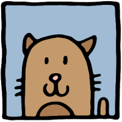
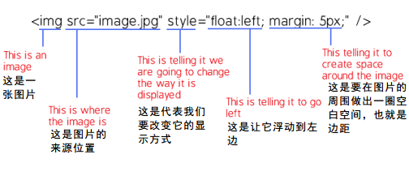

要让一张图片排列到左边去，主要有两种方法。在下面，它们都将得到进一步描述。
第一种方法 - 改变image标签。
要让图片到左边去（同时看起来好看一点），你必须把你的image标签写成类似下面的形式...
<img src="image.jpg" style="float:left; margin: 5px;" />
就是它！你做到了。（在下面，将会详细地说明这种方法）
第二种方法 - 使用CSS。
要通过CSS是图片想做对齐，我们要有两部分的代码，CSS文件部分的代码，页面部分的HTML代码...
CSS 代码:
img.floatleft {
float: left;
margin: 5px;
}
HTML 代码:
<img src="images/yourimagefile.jpg" class="floatleft" />
没错！就是这样。（同样，这种方法也将在下面详细说明）
方法说明

如果你不确定要怎么做...
这里有对上面两种方法的更详尽的说明。我们会仔细地讲解每一个细节。
第一种方法 - 改变image标签
image标签就是用来标示图片在网页上的显示方式的，通常它是这个样子的...
<img src="image.jpg" />
这段代码的作用是让你的网页显示一张图片同时告诉网页图片的存储位置。
它没有设定其他一些可以使用功能。要改变你的图片的显示方式意味着我们必须在这段代码中添加一些新的东西。
在上文中，我们给图片添加了style（样式）。我们让它浮动到左边同时添加了一个5个像素大小的外边距。
于是我们把它改成了这样...
<img src="image.jpg" style="float:left; margin: 5px;" />
如果你确实感兴趣，我们就来看看image标签的每个部分所起的作用...
这种方法简单地添加了一个样式元素到image标签中，这张图片需要移动到左边并且预留一些边距在它周围。如果你需要更大的镖局，你可以将"5"改成"10"，这样在你的文字和图片之间就会有更大的空隙。
第二种方法 - 使用 CSS.
一个CSS文件包括了你的网页依此来以某种特定方式显示元素的指令。为了使用CSS技术，我们必须修改CSS文件和HTML文档。
首先你必须更新你的CSS文件并且添加如下的代码...
img.floatleft {
float: left;
margin: 5px;
}
创建一个"类"。这是在这个类被调用时，指示你图片的显示方式。这个特别的类的名称是"floatleft"，但是我们可以将它命名为任何我们希望的名称。类的名字是上边代码中挨着"."右边的东西。如果我们想要叫这个类"gumballs"，可以像这样修改...
img.gumballs {
float: left;
margin: 5px;
}
无论如何，我们就叫它"floatleft"因为这就是我们正在做的事。
一旦你添加了这个到你的CSS文件中，你必须告诉图片要使用哪个指令。为了达到这个目的，找到你需要移动到左边的那个图片的image标签，然后修改一下它，这样它就知道要调用哪个指令了...
<img src="images/yourimagefile.jpg" class="floatleft" />
在上边的代码中，你可以看见我们添加了一个"类"，它的名字是"floatleft"。现在图片就知道从哪里得到指令了。
一旦CSS文件和HTML的image标签更新了，这张图片就会出现在文字的左边。